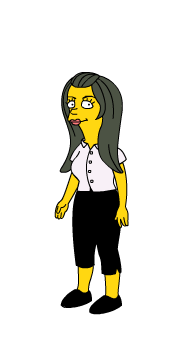
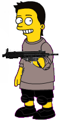

Zack y Cody
 De: La Frikipedia, la enciclopedia extremadamente seria.
De: La Frikipedia, la enciclopedia extremadamente seria.
De la serie Programas de TV:
Si, se lo que piensas, Zack y Cody son los del medio.
| Idioma original:
|
Gringoliense.
|
| Creador:
|
Alguien muy aburrido
|
| Duración:
|
2005 hasta la actualidad.
|
| No. Episodios:
|
Un millon multiplicado por doce.
|
| No. Temporadas:
|
Incontables...
|
| ¿Aún se transmite?:
|
Por desgracia si.
|
| Género:
|
Terror, drogas, y fantasia.
|
| Nivel de frikismo:
|
8%
|
| Películas:
|
Por desgracia si.
|
Actualmente estan solteros (nadie sabe si tienen relaciones sexuales).
Zack y Cody es una serie de gringolandia, otro producto mas de Disney, en el cual gemelos viven en un motel hotel 5 estrellas llamado hotel Tipton.
Zack y Cody Gemelas en la cama
Se trata de una serie donde la madre de Zack y Cody (no se su nombre) actúa y canta para el hotel Ticton (plagio del hotel Hilton).
En Boston, Zack y Cody hacen travesuras en el hotel y también con Maddie y la perra London.
Personajes
- Zack Martín: es un niño muy, pero muy lindo, le gusta el béisbol, fútbol, cerveza para niños y tirarse pedos=peos o como se diga en la serie. Es admirador del equipo de béisbol de Boston. Al igual que su hermano moja la cama, excepto que su hermano Cody la dejó de mojar a los 1, pero en la serie se confundieron y dijeron 11(en un capítulo que Zack le hacen calzón chino se demuestra que usa pañal pues lo enganchan y el bóxer o calzón es de un bebe) . también toca la guitarra, y Chuck Norris lo quiere matar. Es el Rey de los Videojuegos (no hace nada en todo el puto dia). le gusta montarsela a su hermano bisexual cody (que es mas irritante que el aji en los ojos). Zack es mas inteligente que cody pero no despierta el cerebro porque si lo hace seria igual de poderoso a chuck norris y por este motivo chuck norris lo quiere matar. Zack se tira todas las niñas lindas de la serie pues todas se mueren por el y su super personalidad, es el preferido de todos en la serie y en Disney Channel estan pensando en despedir a Cody para que Zack haga los dos papeles.
 este es cody en vida real sin maquillaje
- Cody Martín: Este es el niño típico de una serie de nerds, es el hermano nerd ñoño y envidioso del hermano guapo. Dejó de mojar la cama a los 1 pero en la serie dijeron 11. Su hermano Zack moja tanto la cama que la alfombra es amarilla verdoso. Le gusta las matemáticas, química, ciencias, Chuck Norris, admirador número uno de Albert Einstan o como coño se escriba. Hace ejercicio todos los días para verse
linda lindo y tiene pectorales o tetas y bises, o como coño se diga, aunque haga todo el ejercicio jamas se ve igual de lindo a su hermano Zack, que es el cool. cody solo ha tenido una novia, además se lleva mejor con las mujeres porque London en su sitio web le dice más de 100 veces que vuelva, toca el violín mejor que Mozarc o como coño se escriba. Cody le quita los novios a las amigas, en un capitulo se llevo a los amigos de zack a un armario y pasaron cosas sucias. Cody es Vergofilico tiene fijacion por las pijas grandes se la chupa a chuck norris.
- Mamá o papá(nombre tan desconocido como mi escritura): La típica mamá cantante rubia que se aburrió de ser rubia y ahora es pelirrojo/a. Duerme en el sofá pues le da miedo dormir con Zack porque, aunque su pañal es XXX absorbente, moja la cama y piensa que es por que Zack en verdad es niña y todo lo cool que hace es por que lo confunden con Cody. Y ella no es interesante.
- London Tipton: Es la version asiatica de Paris Hilton, igual de tonta, igual de malcriada, igual de hueca.
- Maddie: o como coño se escriba: Todo lo contrario a London, es pobre, rubia
o eso quisiera ella
- Barbara: supuesta "novia" de cody que en realidad es un travesti asiatico familiar de yaqui chan.
- Niño feo pelirrojo y pecoso que no se como se llama: es otro novio actual de Cody y se lo quito a Zack, tambien es amigo de krilin y bacteria.
- Señor Moseby: El viejo chico gruñon que les prohibe de todo a Zack y Cody en el hotel.
- Esteban Julio Ricardo Rozadelapolla Ramírez: Mejor amigo de Chuck pero intentó engañar a Chuck con Zack, pero Chuck lógicamente lo sabía desde un principio.
- El de la limpieza: Negra pervertida.
- El del restaurante: Blanco pervertido.
- El de la piscina: Le tiene ganas a London pero es un poco lento en todo sentido.
- La otra de la limpieza: Blanca, vieja, gorda, floja, típica anciana pobre, etc (léase pervertida).
- Ssuper toaled y Ssuper pañal: los archienemigos de Zack. Le tienen miedo cuando Zack esta dormido.
- Novio de London principal: El hijo del hotel de al lado, no, no, no, al otro lado. London lo envió a ser dentista después de haber hecho sexo con él; lo tenia tan pequeño que no hacía nada. London, avergonzada, le dijo todo a la revista TIME For Kids y lo publicaron todo(en la revista TIME For Kids).
- peter petrelli: Un idiota que conocieron en una escuela para gente que la tiene pierna y homosexuales.
*Joe Jonas: Es el mejor amigo de Zack por mojar la cama como el y ser los mejores del grupo de hermanos.
Mayores tele videntes
 dibujpo de Zack a los 3 segundos de nacer, ven a lo que me refiero?
Gays10%,
perros10%,
EMOS40%,
gente normal -100%,
Gente que también se orina en la cama 20%,
gente aburridisima 20%.
¿Sabían que:
- ... Cody la tiene tan pequeña como un cheetos mojado?
- ... Cody es una vergüenza para la familia de Zack
- ... Cody no sabe leer ni escribir e incluso no sabe hablar y la voz q se escucha es la de Zack, si Zack hace la voz de su Hermano y la de el
- ... London, es homo y/o/and bisexual?
- ... London es puta, prostituta, ramera, etc (lo que se te ocurra)?
- ... Zack es emo, niño de mami, niño especial, y todo lo demás, en su escuela llora mucho y a veces se le cae el pantalón, no usa boxers ni pañal cuando esta en público pero todo se le perdona por lo guapo que esta?
- ... Cody es un bizarro de Zack.
- ... Cody va hacer una alianza con vegeta, goku y michael jackson para ganarle a su hermano Zack ya que cody siente una envidia natural por ZACK por que Zack es mucho mas apuesto.
- ... Cody sufre de transtornos de tipo pornoeroticosadomasogenicotransexual.
- ... Zack vencio al papa en un concurso de eructos y por consecuencia se le torcieron los dientes a cody.
- ... Frentetaker, gran khali y kane protegen a Zack y esa es la verdadera razon de que chuck norris no le ha hecho nada.
Véase También
Autor(es):
- Krusher
- Fordus
- El Sevillano
- Move Zig
- Freddellinne
- Ardorindino
- Tururiowejcjza
- Independiente
- El barsa2
- Tr
Frikipedia 2005-2016, Licencia
GFDL 1.2 - Extraído por FrikiLeaks